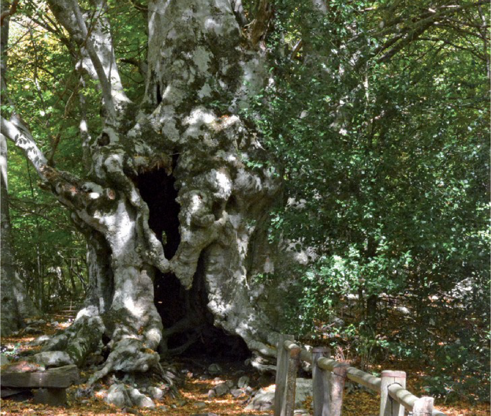

TRONCO CAVO
Specifiche: L'albero si caratterizza per le notevoli dimensioni del tronco e per l'età che
si attesta intorno ai 400 anni. Il tronco è cavo all'interno in quanto colpito da numerosi fulmini
e da attacchi parassitari. Si racconta che l'albero fu colpito da un fulmine che causò la cavità più
consistente che ha una capienza massima di 7 persone.
Coordinate: 41.407085, 14.378364